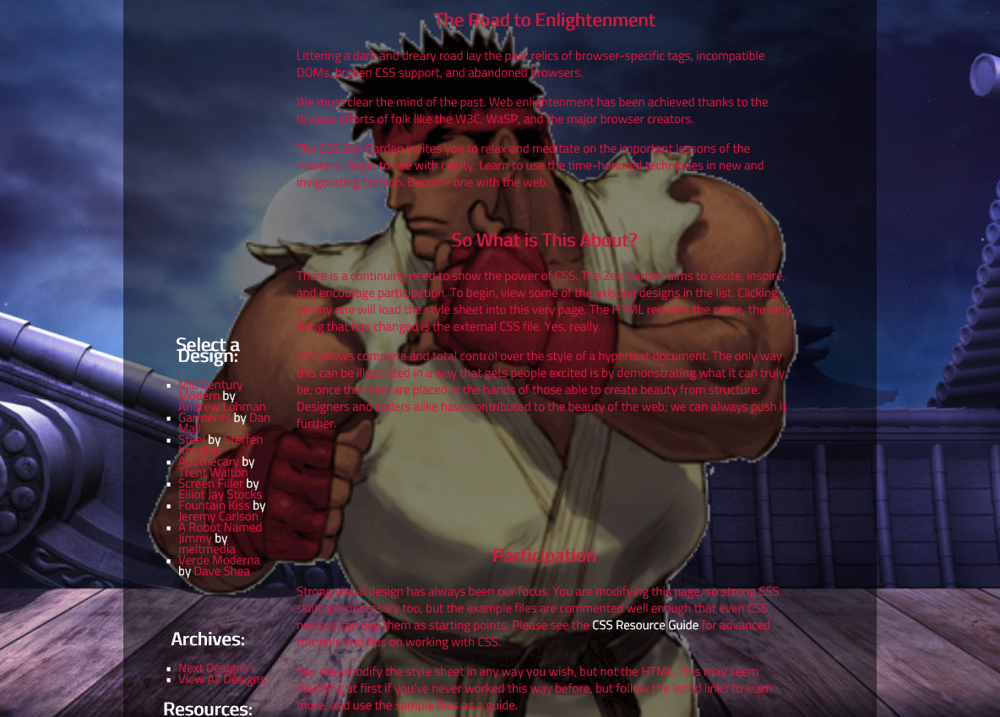
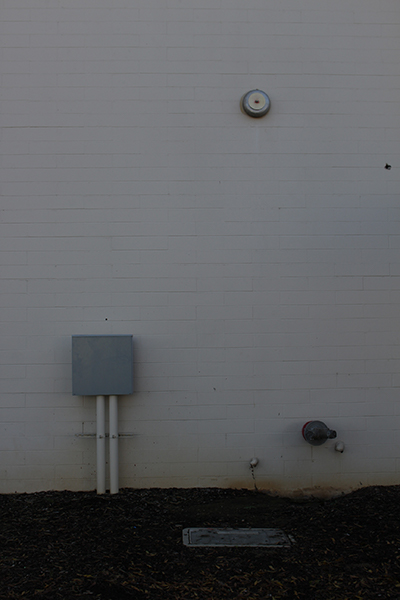
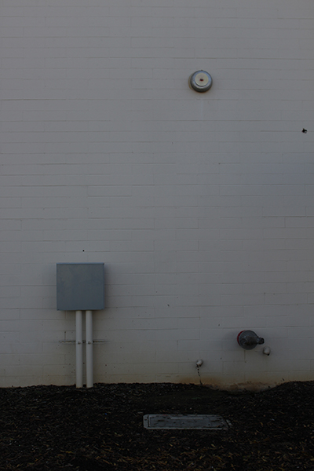

If you click on the image, you will be sent to a project that I was apart of. The website home page of the "Digitial Security" section was done by me. The website, as a whole, was composed by my whole Web Design class. Students, including myself, were split into groups of 4 and had their own subjects to write about. My group did the "Digital Security" section. There were many difficulties into making this section as my group and I had to combine our coding. To be more specific, we had to combine our CSS(Cascading Styling Sheet) into one. To solve this problem, we made classes for pretty much every object to seperate our coding. In the end, it worked out well, and we ended up with a successful website to present for a showcase at CART.
For this project, I believe that each individual in my class had to style our own version of the CSS Zen Garden examples. I decided to go with a Ryu, from the Street Fighter series, themed CSS. This is was when I was still a beginner in styling, and I had to make some adjustments.
This was a slide for a presentation, as my partner and I decided to talk about red pandas. The slide was just a skeleton for the actual website that we had to make. If you scroll down, you can see what my partner and I were thinking about for setting up the website. Like any project with a partner(s), we had to collaborate with eachother by communicating on who's doing what.
Article Response: “Why Justine wasn’t the biggest problem during her Twitter storm” One day, Justine Sacco was the top PR person for InterActiveCorp until she decided to tweet a “joke” before she got on a plane. She tweeted, ”Going to Africa. Hope I don’t get AIDS. Just kidding. I’m white!” As Justine waits for her plane to land, she’s unaware that her tweet has gone viral and is being torn apart by the social media community. There were outrageous responses and a very few responded in a positive way. Tauriq Moosa wrote “Why Justine Sacco wasn’t the biggest problem during her Twitter storm” on December 22, 2013, claiming how people shouldn’t have jumped on the bandwagon/majority and should’ve thought outside the box of the incident of Justine Sacco’s tweet. As Moosa reflects upon the wrong of others during the incident, he/she includes how a random individual created a website, called “JustineSacco.com”, which redirects to aid for Africa. The website is a partnership of 85 select charities that are “dedicated to solving complex, inter-related challenges facing Sub Saharan Africa” by “distributing books to school children, introducing medical strategies to combat the spread of HIV/AIDS, [and] supporting small businesses for women.” As a response, Moosa states, “So instead of just sending a snarky, nasty Tweet to a stranger s/he knows nothing about except that the stranger made a poor - but harmless - joke, this moral individual(s) bought the domain of the hate target and directed it to the very cause which undermines the terrible joke’s prejudices. That’s how you respond. That’s the measure of how we should all respond.” The problem being that the majority had cussed and called out Justine Sacco to be racist but there are other ways to respond to this problem. Instead, a random individual had thought beyond the “joke” and focused on the actual problem at hand, the unprivileged citizens of Africa. Tauriq Moosa reminds us that in life, we shouldn’t jump to conclusions and should think outside the box of any problem within the community.
5035 E Lewis Ave Fresno, CA 93727 hmongvang01@yahoo.com October 5, 2017 Dick’s Sporting Goods 1225 Herndon Ave Clovis, CA 93612 Dear Hiring Manager, I am applying for the cashier position and have learned about this opportunity as I was looking for applications on the Dick’s Sporting Goods Website. I’m also enclosing a resume. I am the best candidate for this position as I am very skilled in communicating with others. In addition, as an athlete and a fisherman, I could help any customer in need. As the ideal person for the job, I have experience in helping the community as I had volunteered multiple times for a church and for school events. I am skilled in working as a team to get projects done in a timely matter for special events such as homecoming and school rallies/parades. As an example, I volunteered for the Peace Lutheran Church Youth, and my job was to greet people and serving food at Free Church events like Easter, Halloween, Thanksgiving, and Christmas. Working as a team has toned my skills of being a leader, following directions, meeting deadlines, communication, and teamwork. As cashiers need to be the ones who communicate the most with customers, I am certainly capable of communicating with those who need help or service. As I am looking for a part time job, I can come in at any time if called for an interview. You can contact me at any time that you feel when necessary. Thank you for giving me your time. Sincerely, Steven Vang Signature (559)765-1388
As Wade was spending time on working out and being healthy in real life, Art3mis had jump on him as she found the Jade Key. After finding out, he gave himself a little pep talk about how he shouldn’t have spent so much time away from the hunt. During his “depression”, he didn’t focus on the Hunt as much as he was focusing on figuring out what to do with his life. Art3mis finding the Jade Key was a wake up call for Wade, and he obviously blames himself for procrastinating for so long. Sometimes, we lose sight of what we truly desire and tend to forget our purpose in life. And sometimes, all we need is a little talk to ourselves to recollect and remind us of what’s our goal and purpose. There will always be a time where we just want to do something else for a time being, depending on our mood and mental state. Let it be depression, happiness, loneliness, confusion, or anger, everyone has their own way of coping or recovering from these state of minds. In Wade’s case, he decided to better himself and fade away from his depression by increasing the stats on his gear, health, body, and self-esteem. While focusing on your main goal, there will be “side quests” that end up distracting you from what you were mainly aiming for. These “side quests” are small and tedious goals that are either beneficial or get in your way. In real life, these “side quests” can be anything from doing errands to, in worst cases, a death of a friend or family member that can affect your mental state of mind. As time goes by, you start to refocus on your goal. Wade’s self talk isn’t just some lecture he gives himself, but a slap to the face telling himself, “You shouldn’t have strayed away from your goal for so long, and because of that, you’ve lost time that you can never get back. Before you waste even more time, do what your supposed to do before time runs out,” Time is a valuable essence, use every second, minute, hour, day, week, month, and year to do what you truly aim for.

 
